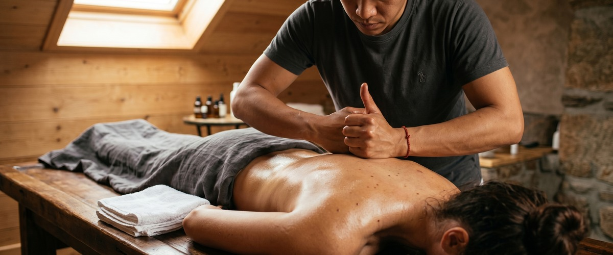
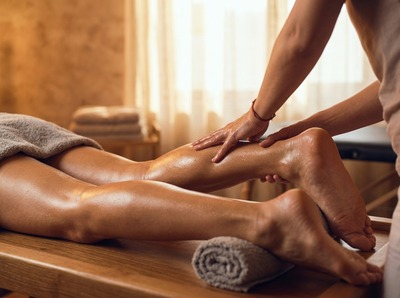

★★★★★ Quality gate failures: paragraphs. Review and edit before removing this notice. ★★★★★
Here's a question worth asking: is sports massage only for professional athletes? The short answer is no, and that assumption puts a lot of people off something that could genuinely help them.

Sports massage is one of the most practical, targeted treatments available. It helps anyone who moves their body often, deals with recurring muscle tightness, or is recovering from a strain. You don't need to be training for a marathon to benefit. You just need a body that's been asked to do more than it's comfortably managing.
Sports massage works on muscles, tendons, and soft tissue. These are the parts of the body that come under stress through physical activity. It uses deep pressure, assisted stretching, and targeted work to ease tension, cut recovery time, and improve how freely your body moves.

A general relaxation massage aims to calm the nervous system. Sports massage has a different goal: to get specific muscles working better. That might mean releasing a tight hip flexor that's affecting your running, or breaking down built-up tension in an overworked shoulder.
At Glasgow Thai Massage, the Thai sports massage we offer draws on traditional Thai bodywork alongside targeted soft tissue work. That blend makes it effective for both recovery and injury prevention.
A sports massage session isn't a passive experience. Your therapist will use more pressure than you'd get in a standard relaxation treatment. They'll focus on the areas causing real problems, rather than simply working across the whole body.
Common techniques include deep tissue work on areas of lasting tightness and trigger point therapy to release knots that are sending pain elsewhere. Assisted stretching helps joints that have become stiff and restricted.
Before starting, your therapist will ask about your activity level, any recent injuries, and where you feel tight. That shapes the whole session. Some discomfort is normal, especially on areas carrying a lot of tension. A good therapist will always adjust pressure to keep you comfortable.
This is worth saying clearly. You don't need to be training for anything to have tight muscles that need this kind of work. Office workers who sit for eight hours a day develop the same postural tension that athletes get from repetitive movement.
Tight hip flexors, shortened chest muscles, restricted upper back — these are sports massage problems too. They're just caused by a chair rather than a track. The techniques are the same. What changes is the focus area and the conversation about how the problem started.
People dealing with lower back pain, chronic neck and shoulder tension, or restricted movement after a minor injury often respond very well to sports massage.
If you're in Glasgow City Centre and you've been carrying tension for longer than you'd like to admit, book your session today and have a chat with the therapist about what's been bothering you before treatment starts.
Sports massage serves different purposes depending on when you have it. Before a big physical effort, a lighter session can improve circulation and loosen muscles that might tighten under load. During a demanding period, regular sessions manage tension before it becomes an injury.
After exercise or an event, sports massage is most useful for speeding up recovery. Research in the Journal of Sport Rehabilitation found that deep tissue massage helped people with knee tendonitis recover faster. The idea that working soft tissue supports the body's own repair is well backed by the evidence.
People who have regular sports massage tend to keep better range of motion over time. That means fewer injuries and better physical function as the years go on. It's not a luxury. It's maintenance.
The treatments overlap, which is part of why people get confused. Traditional Thai massage uses assisted stretching and acupressure along the body's sen energy lines. It works through the full body in a set sequence. Deep tissue massage applies firm pressure to reach deeper layers of muscle and connective tissue.
Sports massage takes elements of both but applies them with a clear goal in mind. It's more targeted than a traditional Thai session. It's also more movement-focused than a standard deep tissue treatment. The outcome you're working toward shapes which techniques your therapist uses.
At Glasgow Thai Massage, Maliwan and Jariya bring over 20 years of experience in Thai bodywork to every session. That means the sports massage here is rooted in real technique, not a generic spa version of the same idea.
If you've been putting off getting proper treatment for something that's been bothering you, sports massage is a good place to start. It's direct, it's effective, and you'll usually notice a real difference after even a single session. Book online now at Glasgow Thai Massage and let the work speak for itself.
No. Sports massage is suitable for anyone dealing with muscle tension, restricted movement, or soft tissue discomfort, regardless of whether they play sport. Office workers, manual labourers, and people recovering from minor injuries all benefit from the same techniques. The name refers to the style of work, not the intended audience.
Sports massage uses more pressure than a relaxation treatment, so some discomfort on tight or inflamed areas is normal. It should never be sharp or unbearable. A good therapist will adjust pressure based on your feedback throughout the session, and the discomfort typically eases as the tissue relaxes.
It depends on your activity level and what you're trying to achieve. For general maintenance and injury prevention, once or twice a month is a reasonable starting point. If you're in active training or dealing with a specific issue, more frequent sessions may be recommended. Your therapist can advise based on how your body responds.
Drink plenty of water, as the treatment increases circulation and can speed up the removal of waste products from the body. Avoid intense exercise for 24 hours after a deep session. Some people experience mild soreness the day after, similar to post-workout fatigue. This is normal and usually passes within 48 hours.
Deep tissue massage applies firm pressure to reach deeper layers of muscle and connective tissue. It focuses on releasing lasting tightness. Sports massage uses deep tissue techniques but adds stretching, movement work, and a more targeted approach based on specific muscle groups and function. It's typically more goal-focused than a standard deep tissue treatment.